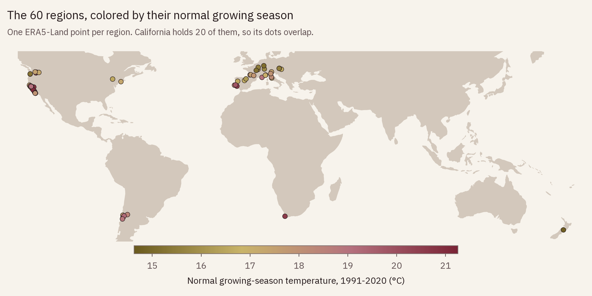
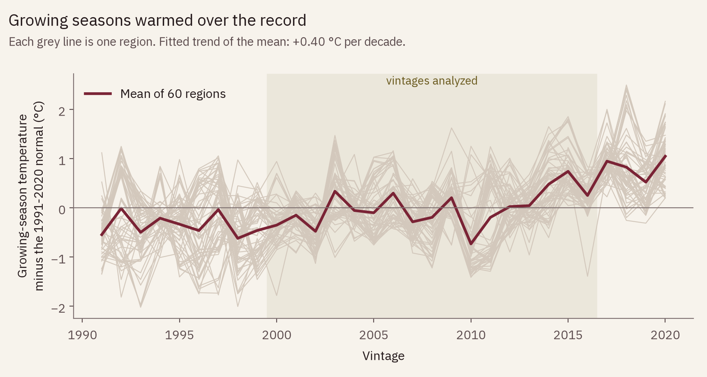
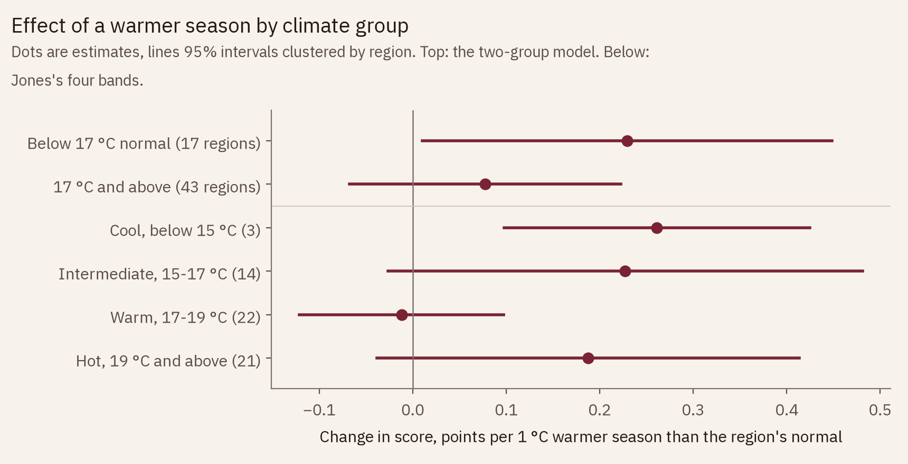
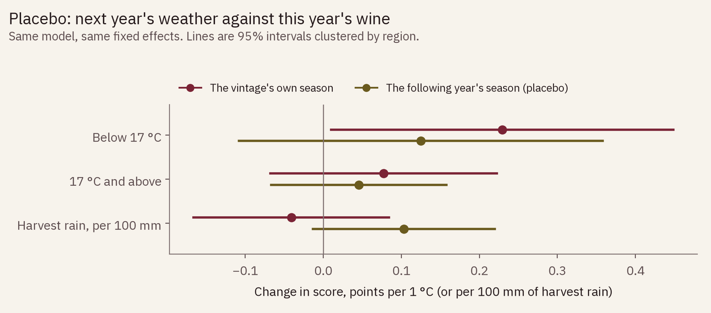
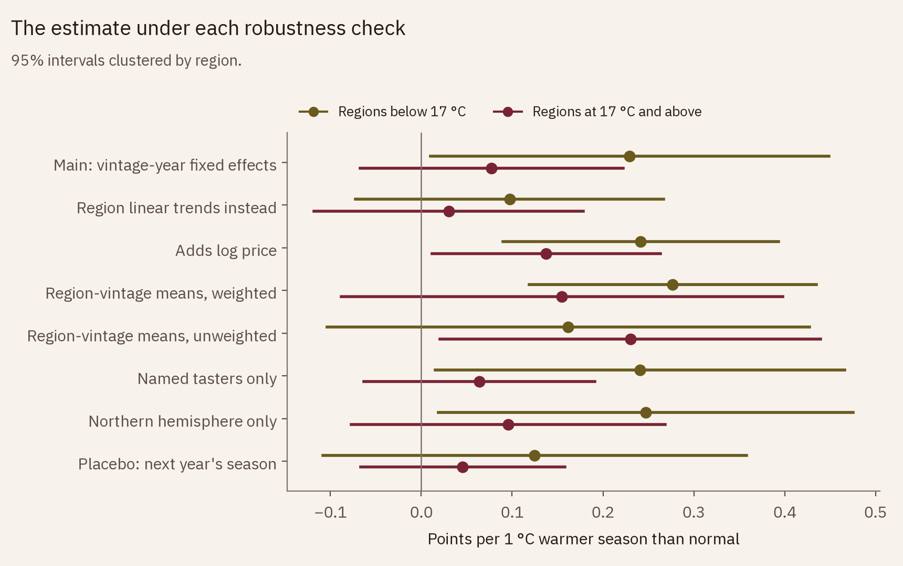

62,348 reviews, 60 regions, vintages 2000 to 2016
A growing season 1 °C warmer than a region's normal moved Wine Enthusiast scores by +0.23 points in cool regions and +0.08 points in warm ones. The question was whether heat helps cool places and hurts warm ones. It helped the cool ones a little, and it did not hurt the warm ones; the gap between the two is not statistically clear, and the checks weaken even the cool-region estimate.
points per 1 °C in the 17 regions with a normal season below 17 °C (95% interval 0.01 to 0.45, p = 0.041).
points per 1 °C in the 43 regions at 17 °C and above (−0.07 to 0.22, p = 0.29). No sign of heat lowering scores.
points for next year's weather, a placebo that should be zero, in the cool group (p = 0.29).
smaller error predicting a held-out vintage's scores once weather is added (1.301 to 1.280 points).
The question
Wine writers talk about hot vintages and cool ones as if the weather were printed on the label. Economists have taken that seriously: Ashenfelter, Ashmore and Lalonde (1995) showed that the prices of mature red Bordeaux can be predicted from growing-season weather, with great vintages in years when the growing season is warm, August and September are dry and the previous winter wet. Jones, White, Cooper and Storchmann (2005) found that vintage ratings in most European regions rose with growing-season temperature, and that for twelve regions or wine categories a quadratic fit had an optimum, beyond which warmer seasons scored lower.
If the optimum idea holds across regions, an extra degree should help a cool place such as Mosel and do little or harm in a hot one such as Napa. This study puts that to the Wine Enthusiast reviews, using each region's own seasons rather than one region's history.
Data
The reviews are the public winemag-data-130k-v2 set of 129,971
Wine Enthusiast reviews, the same file as the
wine score inflation study.
The vintage is the first year in each wine's title; 125,322 reviews carry one.
A region is the review's appellation (country / province / region_1, or the
province where the appellation field is empty), and it is kept if it has at least 400
reviews and 10 vintages between 2000 and 2016. 7 labels that pass the counts
but cover more than one climate, such as "California" and "Toscana", are dropped. That
leaves 60 regions and 62,348 reviews, a list frozen in
data/regions.csv before any weather was fetched.
Each region gets one point: the appellation's coordinates on Wikipedia, or its main wine town where the appellation page has none. Weather is ERA5-Land reanalysis from the Open-Meteo archive: daily highs and lows over the growing season (April to October in the north, October to April in the south). Open-Meteo returns no rain for ERA5-Land, so harvest rain comes from ERA5, the coarser reanalysis that drives it. As a check on the points, the terrain elevation Open-Meteo uses at each one was compared with the elevation its source gives. 57 points fall within 300 m; 3 sources give no elevation; one point, the Santa Barbara County centroid, sat at 888 m in the mountains and was moved to Los Alamos, between the Santa Maria and Santa Ynez valleys.

scripts/make_figures.py on Natural Earth land outlines.Method
For every region and season the pipeline computes the mean temperature (Jones's growing-season temperature, GST), degree days above 10 °C, days above 35 °C, and the rain in the two harvest months. Each is set against the region's 1991-2020 average, so a +1 °C season in Mosel and a +1 °C season in Paso Robles mean the same thing: one degree warmer than that place usually is. Over 2000 to 2016 the anomaly has a standard deviation of 0.60 °C.
The model regresses each review's score on the GST anomaly, allowed to differ between regions below and above 17 °C normal GST, and on the harvest-rain anomaly. It carries fixed effects for region, vintage year, variety and taster, and its standard errors are clustered by region. The year effects matter: seasons warmed by about 0.40 °C a decade across these regions, and anything that moved all scores in a given year is absorbed, so the weather effect comes only from regions having a warmer or cooler year than each other. 17 °C is the line between Jones's intermediate and warm climate groups (Jones 2006), which sort wine regions by their growing-season temperature: cool below 15 °C, intermediate 15 to 17, warm 17 to 19, hot above 19.

Result
points per 1 °C warmer season, regions below 17 °C normal
In the 17 regions below 17 °C, a season 1 °C warmer than normal moved scores by +0.23 points (95% interval 0.01 to 0.45, p = 0.041). In the 43 regions at 17 °C and above it moved them by +0.08 (−0.07 to 0.22, p = 0.29). The difference, −0.15 points, has a p-value of p = 0.18. Treating normal GST as continuous gives +0.14 points per degree at 17 °C and a change of −0.01 for each degree of warmer normal (p = 0.76): no detectable slope.
Jones's four bands tell the same story without a clean gradient: cool +0.26 (3 regions, p = 0.002), intermediate +0.23 (14, p = 0.078), warm −0.01 (22, p = 0.83) and hot +0.19 (21, p = 0.10). The cool band's small interval rests on three regions (Dundee Hills, Santa Cruz Mountains and Marlborough), too few clusters for a reliable standard error.
For scale: review scores here have a standard deviation of 3.0 points, and a typical season is 0.60 °C off its normal, which moves a cool region's scores by about +0.14 points. Degree days give the same split (+0.14 and +0.04 points per 100 degree days). Days above 35 °C add nothing once the mean is in the model (−0.012 and −0.001 points per extra hot day).

results/models.json, models two_group
and four_band.Explore
Pick a region. Each dot is one vintage: across, how far the season ran from normal; up, the vintage's average score after removing the region's average, the year's average across all regions, and each review's variety and taster. The line is the model's estimate for the region's group. Single regions are noisy: 30 of the 60 show a rising slope on their own and 30 a falling one.
pick a region
| Vintage | Season vs normal, °C | Score vs expected | Mean score | Reviews |
|---|
Checks
Next year's weather cannot change this year's wine. Put in place of the real season, it gives +0.12 points in the cool group (p = 0.29) and +0.05 in the warm group (p = 0.42); next year's harvest rain gives +0.10 (p = 0.082). None is significant, but the cool-group placebo is about half the real estimate. Seasons are correlated from one year to the next within a region, so part of the real estimate may be a region running warm and well-reviewed for several years at once rather than the season itself. With both seasons in the model at once, the real one keeps +0.20 points in the cool group (p = 0.029) and next year's takes +0.09 (p = 0.31).

placebo_next_only.The other checks pull in both directions. Separate linear trends for each region in place of the year effects shrink both estimates to +0.10 (p = 0.26) and +0.03 (p = 0.69). Adding log price raises them to +0.24 (p = 0.002) and +0.14 (p = 0.033); price partly records a vintage's reputation, so holding it fixed changes what is being compared. Region-vintage averages weighted by review count give +0.28 and +0.15; unweighted they give +0.16 and +0.23, the only version in which warm regions come out ahead. Dropping one region at a time moves the cool estimate between +0.12 (without Willamette Valley) and +0.27 (without Alsace).

tables/model_coefficients.csv.Out of sample, holding out one vintage at a time and predicting each region-variety average for it, the weather terms cut the error from 1.301 to 1.280 points, 1.6%. They did better in 12 of the 17 held-out vintages. Weather explains 0.08% of the score variation left after region, year, variety and taster.
Limits
Tasters are not blind to vintage, so a score can carry the vintage's reputation; this measures what critics scored, not what a blind panel would. Wine Enthusiast reviews what producers send, and a weak vintage may be under-submitted, which would shrink every difference here. The data has no review dates, so the lag between harvest and tasting is unknown and differs by style: a Barolo reaches a critic years after a Sauvignon Blanc.
One reanalysis point stands in for each region's vineyards and slopes, and harvest rain comes from a coarser grid than temperature. Taster and region are close to the same thing: in 22 of the 60 regions one taster wrote more than 90% of the reviews, so the taster effects and region effects are hard to separate. Scores sit in a narrow band (mean 88.8, standard deviation 3.0), the compression the wine score inflation study documented. The variety version of the analysis, crossing the anomaly with each grape's climate-maturity group, was cut: Jones's grape groupings exist only as a chart, and assigning 306 varieties by reading it would have meant guessing most of them.
Sources
winemag-data-130k-v2 (Kaggle, through a public GitHub mirror), 129,971 reviews.data/regions.csv.